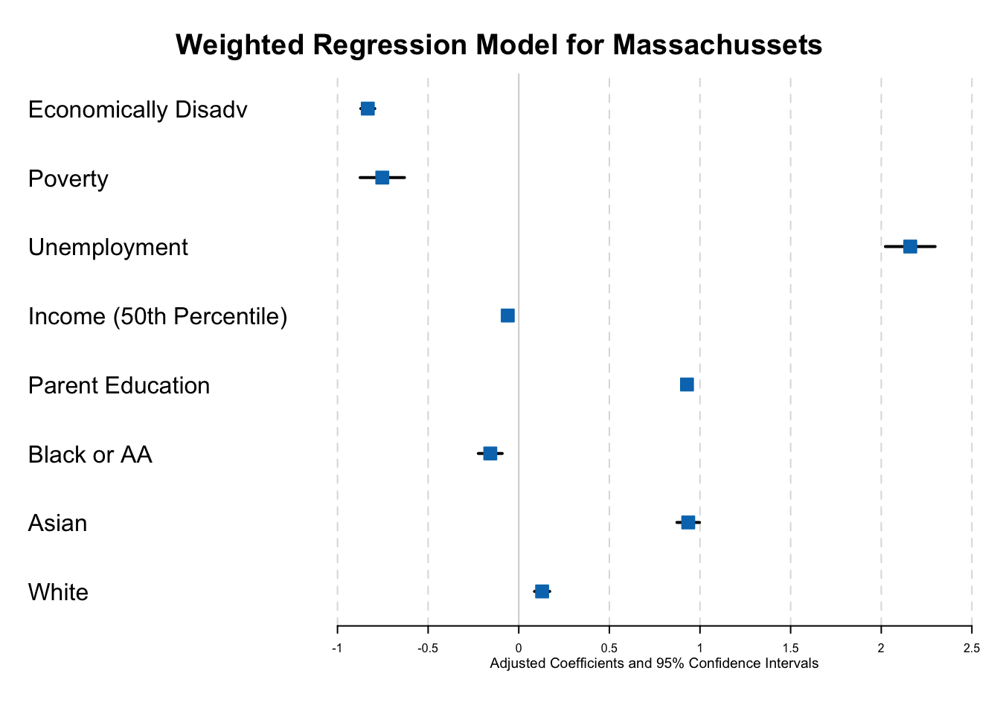
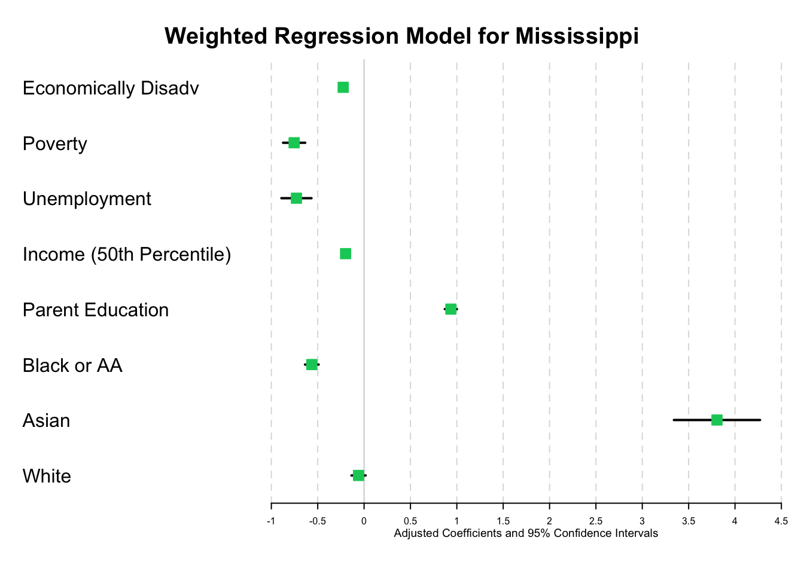
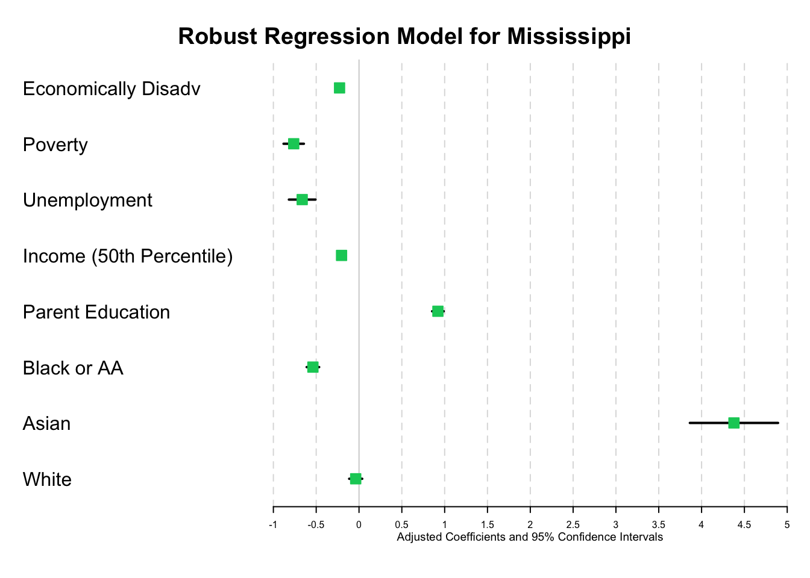

data <-read_csv(here::here("dataset/loan_refusal_clean.csv"))
Rows: 20 Columns: 5
── Column specification ────────────────────────────────────────────────────────
Delimiter: ","
chr (1): bank
dbl (4): min, white, himin, hiwhite
ℹ Use `spec()` to retrieve the full column specification for this data.
ℹ Specify the column types or set `show_col_types = FALSE` to quiet this message.
In general, you should try to provide links to relevant resources, especially those that helped you. You don’t have to link to every StackOverflow post you used but if there are explainers on aspects of the data or specific models that you found helpful, try to link to those. Also, try to link to other sources that might support (or refute) your analysis. These can just be regular hyperlinks. You don’t need a formal citation.
If you are directly quoting from a source, please make that clear. You can show quotes using > like this
> To be or not to be.
To be or not to be.
The question we want to address
We aim to analyze how economic disadvantage correlates with educational performance in language and math across districts within the two states, examining the extent to which factors like median income and unemployment rates influence student performance. Our study also compares the educational outcomes between the two states to assess whether variations in economic conditions contribute to differences in performance. Additionally, we consider the role of racial demographics in this context, investigating how economic disparities affect different racial groups regarding their educational success. Finally, we look at the consistency of these relationships over time to identify any trends or changes, enhancing our understanding of how economic factors have historically influenced educational outcomes.
Modeling
Outline
Weighted Regression Model
Robust Regression Model
Weighted Regression Model
Massachusetts Weighted Regression Model
Observations
4775
Dependent variable
mn_score_all
Type
OLS linear regression
F(8,4766)
1948.86
R²
0.77
Adj. R²
0.77
Est.
S.E.
t val.
p
(Intercept)
0.74
0.23
3.28
0.00
perecd
-0.83
0.04
-21.51
0.00
povertyall
-0.75
0.12
-6.15
0.00
unempall
2.16
0.14
15.75
0.00
lninc50all
-0.06
0.02
-3.19
0.00
baplusall
0.93
0.03
35.19
0.00
perblk
-0.16
0.07
-2.38
0.02
perasn
0.94
0.06
14.99
0.00
perwht
0.13
0.04
3.07
0.00
Standard errors: OLS
Loading required package: grid
Loading required package: checkmate
Loading required package: abind

Interpretation for MA Weighted Regression Model
Interpretations of Weighted Regression Model Coefficients for Massachusetts
Term
Coefficient Estimate
Interpretation
Intercept
0.74363
Baseline mean score for all students, when all predictors are at zero.
perecd
-0.83297
For each percentage point increase in economically disadvantaged students, there is an expected decrease of approximately 0.833 in the mean score.
povertyall
-0.75291
For each percentage point increase in poverty rate, there is an expected decrease of approximately 0.753 in the mean score.
unempall
2.16004
For each percentage point increase in unemployment rate, there is an unexpected increase of approximately 2.160 in the mean score.
lninc50all
-0.06063
A 1% increase in median income is associated with a decrease of 0.061 in the mean score, indicating a complex relationship with other socioeconomic factors.
baplusall
0.92817
For each percentage point increase in the percentage of parents with a bachelor’s degree or higher, there is an expected increase of approximately 0.928 in the mean score.
perblk
-0.15714
For each percentage point increase in the percentage of Black students, there is an expected decrease of approximately 0.157 in the mean score.
perasn
0.93507
For each percentage point increase in the percentage of Asian students, there is an expected increase of approximately 0.935 in the mean score.
perwht
0.12889
For each percentage point increase in the percentage of White students, there is an expected but smaller increase of approximately 0.129 in the mean score.
R-squared
0.76590
The model explains approximately 76.59% of the variance in the mean score for all students in the dataset.
Mississippi Weighted Regression Model
Observations
2836
Dependent variable
mn_score_all
Type
OLS linear regression
F(8,2827)
734.67
R²
0.68
Adj. R²
0.67
Est.
S.E.
t val.
p
(Intercept)
2.31
0.39
5.92
0.00
perecd
-0.23
0.04
-6.18
0.00
povertyall
-0.75
0.12
-6.31
0.00
unempall
-0.73
0.16
-4.49
0.00
lninc50all
-0.20
0.03
-5.74
0.00
baplusall
0.94
0.07
14.36
0.00
perblk
-0.56
0.07
-7.66
0.00
perasn
3.81
0.46
8.20
0.00
perwht
-0.06
0.08
-0.78
0.43
Standard errors: OLS
Mississippi Forest Plot

Interpretation for MS Weighted Regression Model
Interpretations of Weighted Regression Model Coefficients for Mississippi
Term
Coefficient Estimate
Interpretation
Intercept
2.31107
Baseline mean score for all students, when all predictors are at zero.
perecd
-0.22535
For each percentage point increase in economically disadvantaged students, there is an expected decrease of approximately 0.225 in the mean score.
povertyall
-0.75443
For each percentage point increase in poverty rate, there is an expected decrease of approximately 0.754 in the mean score.
unempall
-0.72945
For each percentage point increase in unemployment rate, there is an expected decrease of approximately 0.729 in the mean score.
lninc50all
-0.19933
A 1% increase in median income is associated with a decrease of 0.199 in the mean score, indicating a complex relationship with other socioeconomic factors.
baplusall
0.93576
For each percentage point increase in the percentage of parents with a bachelor’s degree or higher, there is an expected increase of approximately 0.936 in the mean score.
perblk
-0.56360
For each percentage point increase in the percentage of Black students, there is an expected decrease of approximately 0.564 in the mean score.
perasn
3.80540
For each percentage point increase in the percentage of Asian students, there is an expected increase of approximately 3.805 in the mean score.
perwht
-0.05968
For each percentage point increase in the proportion of White students, there is an expected decrease of approximately 0.060 in the mean score, although this effect is not statistically significant (p-value: 0.435).
R-squared
0.67520
The model explains approximately 67.52% of the variance in the mean score for all students in the dataset.
Robust Regression Model
Massachusetts Robust Regression Model
Call: rlm(formula = mn_score_all ~ perecd + povertyall + unempall +
lninc50all + baplusall + perblk + perasn + perwht, data = selected_variables_MA)
Residuals:
Min 1Q Median 3Q Max
-0.686284 -0.091326 -0.005956 0.095575 0.906861
Coefficients:
Value Std. Error t value
(Intercept) 0.6881 0.2257 3.0493
perecd -0.8944 0.0334 -26.7885
povertyall -0.7035 0.1054 -6.6759
unempall 2.1884 0.1325 16.5164
lninc50all -0.0418 0.0190 -2.2032
baplusall 0.8714 0.0257 33.8958
perblk -0.3181 0.0457 -6.9610
perasn 0.7202 0.0541 13.3028
perwht -0.0039 0.0288 -0.1344
Residual standard error: 0.1381 on 4766 degrees of freedom
Interpretations of the Robust Regression Model Coefficients
Variable
Coefficient
Interpretation
(Intercept)
0.6881
Baseline mean score for all students on the logged scale when all predictors are at zero.
perecd
-0.8944
Each percentage point increase in economically disadvantaged students is associated with a 0.8944 point decrease in mean score.
povertyall
-0.7035
Each percentage point increase in poverty rate is associated with a 0.7035 point decrease in mean score.
unempall
2.1884
Each percentage point increase in unemployment rate is associated with a 2.1884 point increase in mean score, which is counterintuitive.
lninc50all
-0.0418
A 1% increase in median income (not logged) is associated with a 0.0418 point decrease in mean score, which may indicate the presence of other interacting variables.
baplusall
0.8714
Each percentage point increase in the proportion of parents with a bachelor’s degree is associated with a 0.8714 point increase in mean score.
perblk
-0.3181
Each percentage point increase in the proportion of Black students is associated with a 0.3181 point decrease in mean score.
perasn
0.7202
Each percentage point increase in the proportion of Asian students is associated with a 0.7202 point increase in mean score.
perwht
-0.0039
Each percentage point increase in the proportion of White students is associated with a negligible change in mean score.
R-squared
0.7697
The model explains approximately 76.97% of the variance in the mean score for all students in the dataset.
Mississippi Robust Regression Model
Call: rlm(formula = mn_score_all ~ perecd + povertyall + unempall +
lninc50all + baplusall + perblk + perasn + perwht, data = selected_variables_MS)
Residuals:
Min 1Q Median 3Q Max
-0.513638 -0.115744 -0.002019 0.110301 0.741378
Coefficients:
Value Std. Error t value
(Intercept) 2.3299 0.3966 5.8746
perecd -0.2273 0.0377 -6.0212
povertyall -0.7626 0.1188 -6.4197
unempall -0.6635 0.1555 -4.2662
lninc50all -0.2040 0.0353 -5.7726
baplusall 0.9211 0.0677 13.6061
perblk -0.5384 0.0729 -7.3860
perasn 4.3782 0.5150 8.5013
perwht -0.0387 0.0762 -0.5085
Residual standard error: 0.1679 on 2827 degrees of freedom
Pseudo R-squared: 0.6624828
MS Robust Regression Forest Plot

Interpretation for MS Robust Regression Model
Interpretations of the Robust Regression Model Coefficients for Mississippi
Variable
Coefficient
Interpretation
Intercept
2.3299
Baseline mean score for all students on the logged scale when all predictors are at zero.
perecd
-0.2273
Each percentage point increase in economically disadvantaged students is associated with a 0.2273 point decrease in mean score.
povertyall
-0.7626
Each percentage point increase in poverty rate is associated with a 0.7626 point decrease in mean score.
unempall
-0.6635
Each percentage point increase in unemployment rate is associated with a 0.6635 point decrease in mean score.
lninc50all
-0.2040
A 1% increase in median income (on the natural log scale) is associated with a 0.2040 point decrease in mean score.
baplusall
0.9211
Each percentage point increase in the proportion of parents with a bachelor’s degree is associated with a 0.9211 point increase in mean score.
perblk
-0.5384
Each percentage point increase in the proportion of Black students is associated with a 0.5384 point decrease in mean score.
perasn
4.3782
Each percentage point increase in the proportion of Asian students is associated with a 4.3782 point increase in mean score.
perwht
-0.0387
Each percentage point increase in the proportion of White students is associated with a 0.0387 point decrease in mean score.
R-squared
0.6625
The model explains approximately 66.25% of the variance in the mean score for all students in the dataset.
We describe here our detailed data analysis. This page will provide an overview of what questions you addressed, illustrations of relevant aspects of the data with tables and figures, and a statistical model that attempts to answer part of the question. You’ll also reflect on next steps and further analysis.
The audience for this page is someone like your class mates, so you can expect that they have some level of statistical and quantitative sophistication and understand ideas like linear and logistic regression, coefficients, confidence intervals, overfitting, etc.
While the exact number of figures and tables will vary and depend on your analysis, you should target around 5 to 6. An overly long analysis could lead to losing points. If you want you can link back to your blog posts or create separate pages with more details.
The style of this paper should aim to be that of an academic paper. I don’t expect this to be of publication quality but you should keep that aim in mind. Avoid using “we” too frequently, for example “We also found that …”. Describe your methodology and your findings but don’t describe your whole process.
Rubric: On this page
You will
Introduce what motivates your Data Analysis (DA)
Which variables and relationships are you most interested in?
What questions are you interested in answering?
Provide context for the rest of the page. This will include figures/tables that illustrate aspects of the data of your question.
Modeling and Inference
The page will include some kind of formal statistical model. This could be a linear regression, logistic regression, or another modeling framework.
Explain the ideas and techniques you used to choose the predictors for your model. (Think about including interaction terms and other transformations of your variables.)
Describe the results of your modelling and make sure to give a sense of the uncertainty in your estimates and conclusions.
Explain the flaws and limitations of your analysis
Are there some assumptions that you needed to make that might not hold? Is there other data that would help to answer your questions?
Clarity Figures
Are your figures/tables/results easy to read, informative, without problems like overplotting, hard-to-read labels, etc?
Each figure should provide a key insight. Too many figures or other data summaries can detract from this. (While not a hard limit, around 5 total figures is probably a good target.)
Default lm output and plots are typically not acceptable.
Clarity of Explanations
How well do you explain each figure/result?
Do you provide interpretations that suggest further analysis or explanations for observed phenomenon?
Organization and cleanliness.
Make sure to remove excessive warnings, hide most or all code, organize with sections or multiple pages, use bullets, etc.
This page should be self-contained, i.e. provide a description of the relevant data.